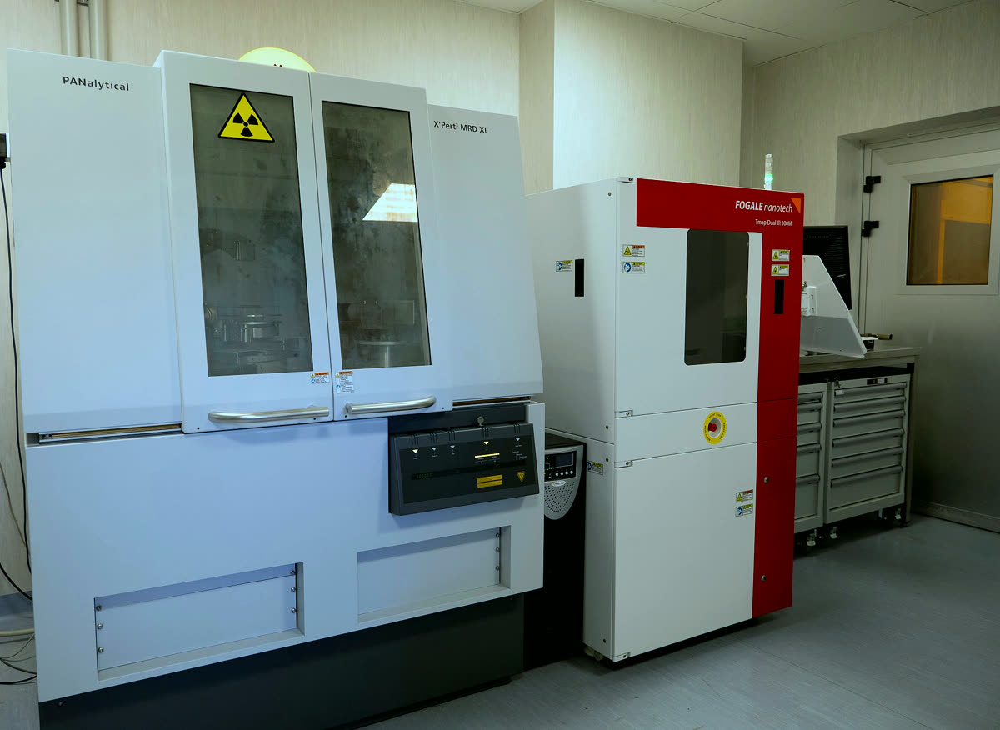
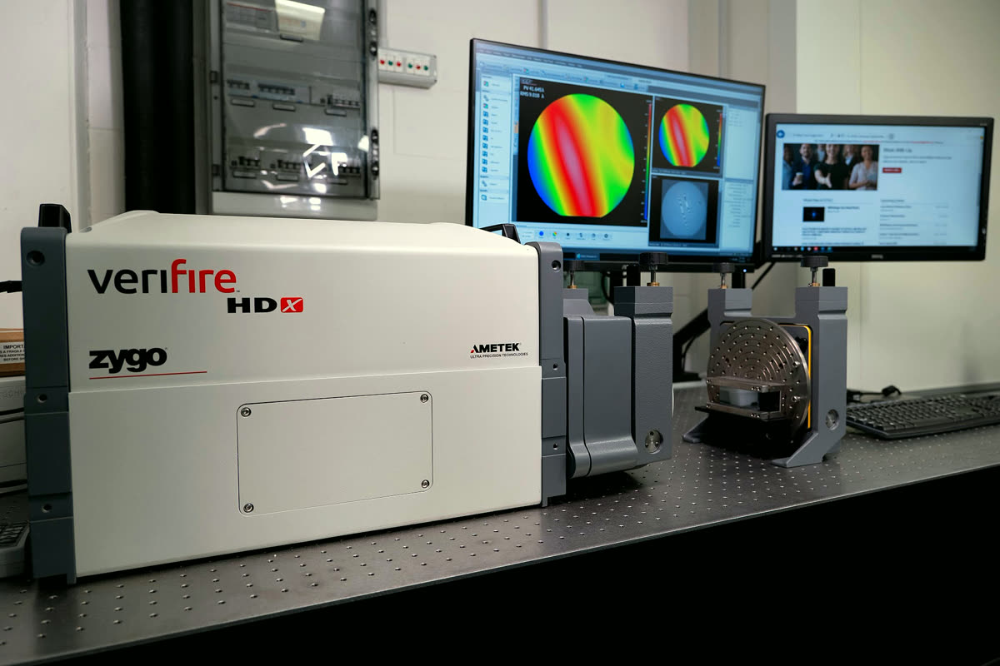
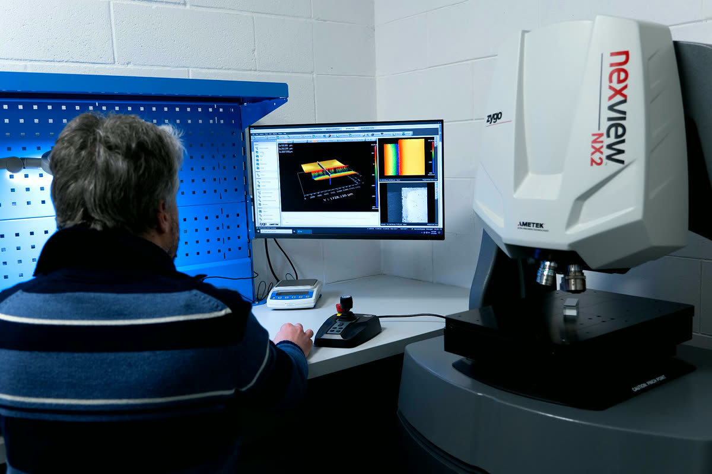
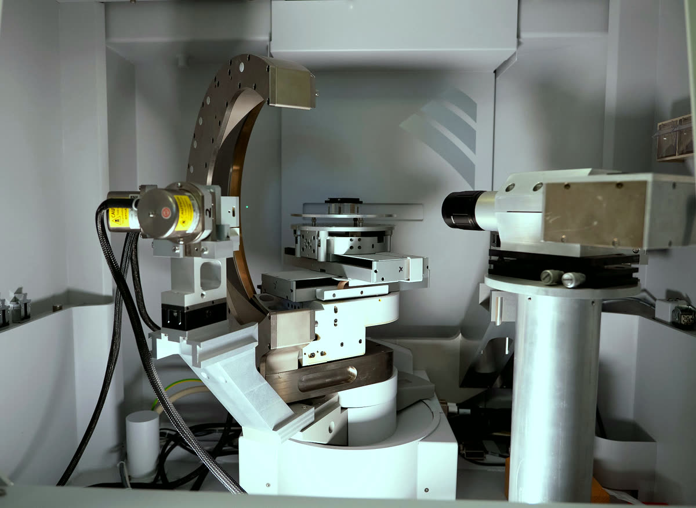

Instruments you can work with.
Our cleanroom and metrology labs in Ferrara. Every instrument here is open to joint projects and measurements with universities, research institutes and companies: write to us with what you need.
Cut and shape

- Dicing saw for 200 mm wafersDisco DAD3351Diamond-blade dicing of wafers up to 200 mm and of large plates.
- UV and infrared laser ablationKeyence MD‑U1000C (UV) and MD‑X2020A (IR)Laser ablation for fine features, deep cuts and marking.
- Grinding, lapping and polishingFlats, optics and crystals polished to nanometre flatness.
Pattern and coat

Bond
Measure



Build and house

Looking for an instrument that is not here? Write to crystals@fe.infn.it: our partners at the Department of Physics and Earth Sciences and at INFN Ferrara may have it.